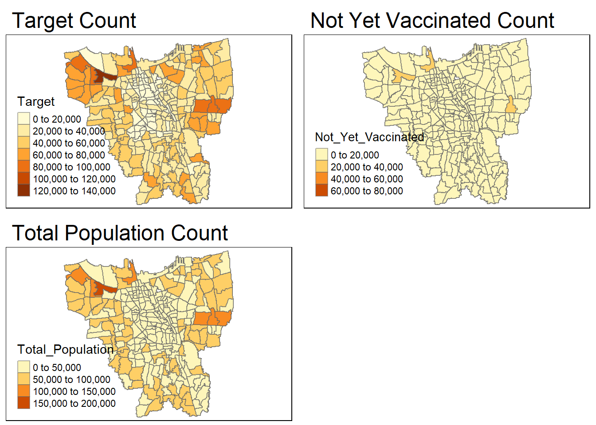
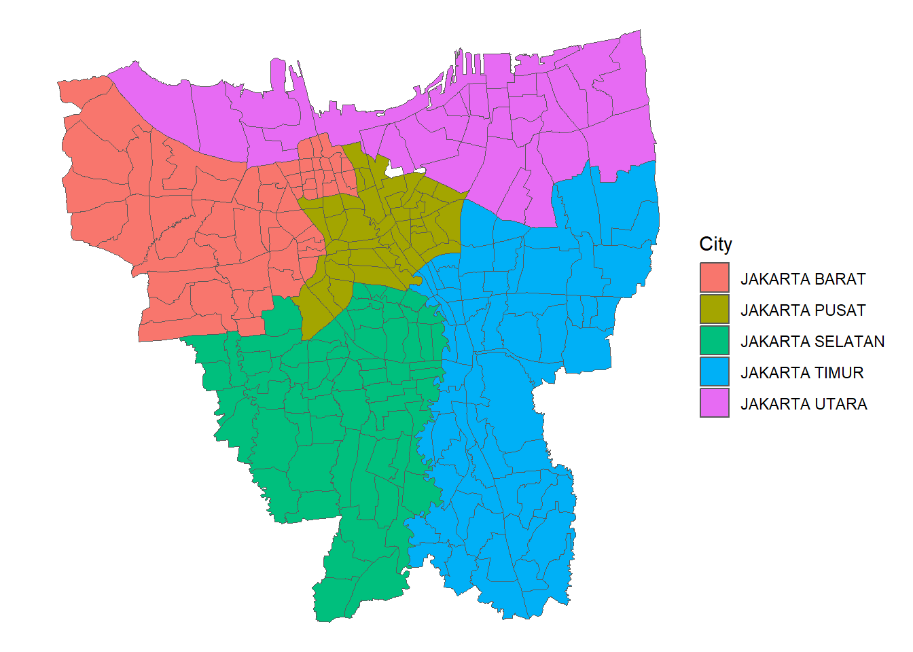
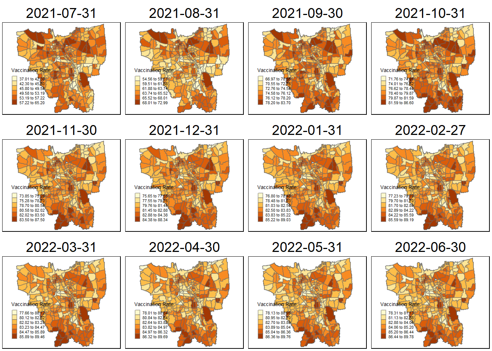

pacman::p_load(sf, tmap, kableExtra, tidyverse, sfdep, readxl, plyr, Kendall)Take-Home Excercise 02
1.0 Overview
wehsbf kjefnb erng lkdjgn elrgnlrk lreig
2.0 Setup
2.1 Packages Used
sf : Used for importing geospatial data, assigning or transforming coordinate systems, and converting geospatial and aspatial data into a sf data frame
tidyverse : Used for transforming and better presentation of Data
tmap : Used for plotting static point patterns maps or interactive maps
spatstat : Used for point-pattern analysis
raster : Used to read, write, manipulate, analyse and model gridded spatial data
maptools : Used to provide a set of tools for manipulating geographic data
kableExtra : Used for table customization
sfdep : Used for functions creates not present in spdep.
readxl
knitr
2.2 Datasets Used
# initialise a dataframe of our geospatial and aspatial dataset details
datasets <- data.frame(
Type=c("Geospatial",
"Aspatial"),
Name=c("DKI Jakarta Provincial Village Boundary",
"District Based Vaccination History"),
Format=c(".shp",
".xlsx"),
Source=c("(https://www.indonesia-geospasial.com/2020/04/download-shapefile-shp-batas-desa.html)",
"(https://riwayat-file-vaksinasi-dki-jakarta-jakartagis.hub.arcgis.com/)"),
Description=c("It has the District level boundary data of DKI Jakarta of 2019",
"The muiliple excel files consists of all the vaccinations done at Village and District based.")
)
# with reference to this guide on kableExtra:
# https://cran.r-project.org/web/packages/kableExtra/vignettes/awesome_table_in_html.html
# kable_material is the name of the kable theme
# 'hover' for to highlight row when hovering, 'scale_down' to adjust table to fit page width
library(knitr)
library(kableExtra)
kable(datasets, caption="Datasets Used") %>%
kable_material("hover", latex_options="scale_down")| Type | Name | Format | Source | Description |
|---|---|---|---|---|
| Geospatial | DKI Jakarta Provincial Village Boundary | .shp | (https://www.indonesia-geospasial.com/2020/04/download-shapefile-shp-batas-desa.html) | It has the District level boundary data of DKI Jakarta of 2019 |
| Aspatial | District Based Vaccination History | .xlsx | (https://riwayat-file-vaksinasi-dki-jakarta-jakartagis.hub.arcgis.com/) | The muiliple excel files consists of all the vaccinations done at Village and District based. |
Things to Note for Aspatial Data:
To retrieve the monthly cumulative records for the COVID-19 cases in Jakarta, I took the data compiled on the last of every month (e.g - 31st July, 30tt August … ) from July 2021 to June 2022. I had started with taking first of every month, however, i realized that
Further, the data consists of the following groups -
Vaccination of Elderly (Lansia)
Vaccination of Public Servant (Pelayan Publik)
Mutual Cooperation (Goton Royong) Vaccination
Vaccination of Health Workers (Tenaga Kesehatan)
Stage 3 (Tahapan) Vaccinations
Vaccination of Teenagers (Remaja)
3.0 Data Wrangling : Geospatial Data
3.1 Importing Geospatial Data
We will begin by importing Geospatial data into R by using the st_read() of sf package. It imports the BATAS_DESA_DESEMBER_2019_DUKCAPIL_DKI_JAKARTA shapefile into R as a polygon data frame. We provide 2 arguments - dsn (which is the data path) and layer (the shapefile name)
jakarta <- st_read(dsn="data/geospatial",
layer="BATAS_DESA_DESEMBER_2019_DUKCAPIL_DKI_JAKARTA")Reading layer `BATAS_DESA_DESEMBER_2019_DUKCAPIL_DKI_JAKARTA' from data source
`C:\mayurims\IS415-GAA\Take-Home_Ex\Take-Home_Ex02\data\geospatial'
using driver `ESRI Shapefile'
Simple feature collection with 269 features and 161 fields
Geometry type: MULTIPOLYGON
Dimension: XY
Bounding box: xmin: 106.3831 ymin: -6.370815 xmax: 106.9728 ymax: -5.184322
Geodetic CRS: WGS 84From the output message, we learn that:
Geometry type is multipolygon
269 features, 161 fields
Assigned CRS is WGS 84, the ‘World Geodetic System 1984’. This is not right, and will be rectified in ____
3.2 Data Pre-processing
3.2.1 Dropping Invalid Dimensions
Since, we only have one dataframe, there are no invalid dimensions, and hence, this step is not required.
3.2.2 Missing Values
Now lets check if there are any missing values.
jakarta[rowSums(is.na(jakarta))!=0,]Simple feature collection with 2 features and 161 fields
Geometry type: MULTIPOLYGON
Dimension: XY
Bounding box: xmin: 106.8412 ymin: -6.154036 xmax: 106.8612 ymax: -6.144973
Geodetic CRS: WGS 84
OBJECT_ID KODE_DESA DESA KODE PROVINSI KAB_KOTA KECAMATAN
243 25645 31888888 DANAU SUNTER 318888 DKI JAKARTA <NA> <NA>
244 25646 31888888 DANAU SUNTER DLL 318888 DKI JAKARTA <NA> <NA>
DESA_KELUR JUMLAH_PEN JUMLAH_KK LUAS_WILAY KEPADATAN PERPINDAHA JUMLAH_MEN
243 <NA> 0 0 0 0 0 0
244 <NA> 0 0 0 0 0 0
PERUBAHAN WAJIB_KTP SILAM KRISTEN KHATOLIK HINDU BUDHA KONGHUCU KEPERCAYAA
243 0 0 0 0 0 0 0 0 0
244 0 0 0 0 0 0 0 0 0
PRIA WANITA BELUM_KAWI KAWIN CERAI_HIDU CERAI_MATI U0 U5 U10 U15 U20 U25
243 0 0 0 0 0 0 0 0 0 0 0 0
244 0 0 0 0 0 0 0 0 0 0 0 0
U30 U35 U40 U45 U50 U55 U60 U65 U70 U75 TIDAK_BELU BELUM_TAMA TAMAT_SD SLTP
243 0 0 0 0 0 0 0 0 0 0 0 0 0 0
244 0 0 0 0 0 0 0 0 0 0 0 0 0 0
SLTA DIPLOMA_I DIPLOMA_II DIPLOMA_IV STRATA_II STRATA_III BELUM_TIDA
243 0 0 0 0 0 0 0
244 0 0 0 0 0 0 0
APARATUR_P TENAGA_PEN WIRASWASTA PERTANIAN NELAYAN AGAMA_DAN PELAJAR_MA
243 0 0 0 0 0 0 0
244 0 0 0 0 0 0 0
TENAGA_KES PENSIUNAN LAINNYA GENERATED KODE_DES_1 BELUM_ MENGUR_ PELAJAR_
243 0 0 0 <NA> <NA> 0 0 0
244 0 0 0 <NA> <NA> 0 0 0
PENSIUNA_1 PEGAWAI_ TENTARA KEPOLISIAN PERDAG_ PETANI PETERN_ NELAYAN_1
243 0 0 0 0 0 0 0 0
244 0 0 0 0 0 0 0 0
INDUSTR_ KONSTR_ TRANSP_ KARYAW_ KARYAW1 KARYAW1_1 KARYAW1_12 BURUH BURUH_
243 0 0 0 0 0 0 0 0 0
244 0 0 0 0 0 0 0 0 0
BURUH1 BURUH1_1 PEMBANT_ TUKANG TUKANG_1 TUKANG_12 TUKANG__13 TUKANG__14
243 0 0 0 0 0 0 0 0
244 0 0 0 0 0 0 0 0
TUKANG__15 TUKANG__16 TUKANG__17 PENATA PENATA_ PENATA1_1 MEKANIK SENIMAN_
243 0 0 0 0 0 0 0 0
244 0 0 0 0 0 0 0 0
TABIB PARAJI_ PERANCA_ PENTER_ IMAM_M PENDETA PASTOR WARTAWAN USTADZ JURU_M
243 0 0 0 0 0 0 0 0 0 0
244 0 0 0 0 0 0 0 0 0 0
PROMOT ANGGOTA_ ANGGOTA1 ANGGOTA1_1 PRESIDEN WAKIL_PRES ANGGOTA1_2
243 0 0 0 0 0 0 0
244 0 0 0 0 0 0 0
ANGGOTA1_3 DUTA_B GUBERNUR WAKIL_GUBE BUPATI WAKIL_BUPA WALIKOTA WAKIL_WALI
243 0 0 0 0 0 0 0 0
244 0 0 0 0 0 0 0 0
ANGGOTA1_4 ANGGOTA1_5 DOSEN GURU PILOT PENGACARA_ NOTARIS ARSITEK AKUNTA_
243 0 0 0 0 0 0 0 0 0
244 0 0 0 0 0 0 0 0 0
KONSUL_ DOKTER BIDAN PERAWAT APOTEK_ PSIKIATER PENYIA_ PENYIA1 PELAUT
243 0 0 0 0 0 0 0 0 0
244 0 0 0 0 0 0 0 0 0
PENELITI SOPIR PIALAN PARANORMAL PEDAGA_ PERANG_ KEPALA_ BIARAW_ WIRASWAST_
243 0 0 0 0 0 0 0 0 0
244 0 0 0 0 0 0 0 0 0
LAINNYA_12 LUAS_DESA KODE_DES_3 DESA_KEL_1 KODE_12
243 0 0 <NA> <NA> 0
244 0 0 <NA> <NA> 0
geometry
243 MULTIPOLYGON (((106.8612 -6...
244 MULTIPOLYGON (((106.8504 -6...We can see that there are 2 rows containing ‘NA’ values. However, since the data is big, we need to find the columns with missing NA values so that we can work on it.
names(which(colSums(is.na(jakarta))>0))[1] "KAB_KOTA" "KECAMATAN" "DESA_KELUR" "GENERATED" "KODE_DES_1"
[6] "KODE_DES_3" "DESA_KEL_1"We can see that there are two particular rows with missing values for KAB_KOTA (City), KECAMATAN (District) and DESA_KELUR (Village).
Hence, we remove rows that NA value in DESA_KELUR. There are other columns present as well, however, since we are only looking at the sub-district level, it is most appropriate to remove DESA_KELUR
jakarta <- na.omit(jakarta,c("DESA_KELUR"))Lets double check if there the rows with missing values are removed.
jakarta[rowSums(is.na(jakarta))!=0,]Simple feature collection with 0 features and 161 fields
Bounding box: xmin: NA ymin: NA xmax: NA ymax: NA
Geodetic CRS: WGS 84
[1] OBJECT_ID KODE_DESA DESA KODE PROVINSI KAB_KOTA
[7] KECAMATAN DESA_KELUR JUMLAH_PEN JUMLAH_KK LUAS_WILAY KEPADATAN
[13] PERPINDAHA JUMLAH_MEN PERUBAHAN WAJIB_KTP SILAM KRISTEN
[19] KHATOLIK HINDU BUDHA KONGHUCU KEPERCAYAA PRIA
[25] WANITA BELUM_KAWI KAWIN CERAI_HIDU CERAI_MATI U0
[31] U5 U10 U15 U20 U25 U30
[37] U35 U40 U45 U50 U55 U60
[43] U65 U70 U75 TIDAK_BELU BELUM_TAMA TAMAT_SD
[49] SLTP SLTA DIPLOMA_I DIPLOMA_II DIPLOMA_IV STRATA_II
[55] STRATA_III BELUM_TIDA APARATUR_P TENAGA_PEN WIRASWASTA PERTANIAN
[61] NELAYAN AGAMA_DAN PELAJAR_MA TENAGA_KES PENSIUNAN LAINNYA
[67] GENERATED KODE_DES_1 BELUM_ MENGUR_ PELAJAR_ PENSIUNA_1
[73] PEGAWAI_ TENTARA KEPOLISIAN PERDAG_ PETANI PETERN_
[79] NELAYAN_1 INDUSTR_ KONSTR_ TRANSP_ KARYAW_ KARYAW1
[85] KARYAW1_1 KARYAW1_12 BURUH BURUH_ BURUH1 BURUH1_1
[91] PEMBANT_ TUKANG TUKANG_1 TUKANG_12 TUKANG__13 TUKANG__14
[97] TUKANG__15 TUKANG__16 TUKANG__17 PENATA PENATA_ PENATA1_1
[103] MEKANIK SENIMAN_ TABIB PARAJI_ PERANCA_ PENTER_
[109] IMAM_M PENDETA PASTOR WARTAWAN USTADZ JURU_M
[115] PROMOT ANGGOTA_ ANGGOTA1 ANGGOTA1_1 PRESIDEN WAKIL_PRES
[121] ANGGOTA1_2 ANGGOTA1_3 DUTA_B GUBERNUR WAKIL_GUBE BUPATI
[127] WAKIL_BUPA WALIKOTA WAKIL_WALI ANGGOTA1_4 ANGGOTA1_5 DOSEN
[133] GURU PILOT PENGACARA_ NOTARIS ARSITEK AKUNTA_
[139] KONSUL_ DOKTER BIDAN PERAWAT APOTEK_ PSIKIATER
[145] PENYIA_ PENYIA1 PELAUT PENELITI SOPIR PIALAN
[151] PARANORMAL PEDAGA_ PERANG_ KEPALA_ BIARAW_ WIRASWAST_
[157] LAINNYA_12 LUAS_DESA KODE_DES_3 DESA_KEL_1 KODE_12 geometry
<0 rows> (or 0-length row.names)3.2.3 Verifying + Transforming Coordinates
Now, we use the st_crs() to check the coordinate system of the data. As we can see, it uses the WGS 84 coordinate system. The data is using a Geographic projected system, however, this is system is not appropriate since we need to use distance and area measures.
st_crs(jakarta)Coordinate Reference System:
User input: WGS 84
wkt:
GEOGCRS["WGS 84",
DATUM["World Geodetic System 1984",
ELLIPSOID["WGS 84",6378137,298.257223563,
LENGTHUNIT["metre",1]]],
PRIMEM["Greenwich",0,
ANGLEUNIT["degree",0.0174532925199433]],
CS[ellipsoidal,2],
AXIS["latitude",north,
ORDER[1],
ANGLEUNIT["degree",0.0174532925199433]],
AXIS["longitude",east,
ORDER[2],
ANGLEUNIT["degree",0.0174532925199433]],
ID["EPSG",4326]]Hence, we use st_transform() and not st_set_crs() as st_set_crs() assigns the EPSG code to the data frame. And we need to transform the data frame from geographic to projected coordinate system. We will be using crs=26392 (found from the EPSG for Indonesia).
jakarta <- st_transform(jakarta, 23845)Lets double check if CRS has been assigned
st_crs(jakarta)Coordinate Reference System:
User input: EPSG:23845
wkt:
PROJCRS["DGN95 / Indonesia TM-3 zone 54.1",
BASEGEOGCRS["DGN95",
DATUM["Datum Geodesi Nasional 1995",
ELLIPSOID["WGS 84",6378137,298.257223563,
LENGTHUNIT["metre",1]]],
PRIMEM["Greenwich",0,
ANGLEUNIT["degree",0.0174532925199433]],
ID["EPSG",4755]],
CONVERSION["Indonesia TM-3 zone 54.1",
METHOD["Transverse Mercator",
ID["EPSG",9807]],
PARAMETER["Latitude of natural origin",0,
ANGLEUNIT["degree",0.0174532925199433],
ID["EPSG",8801]],
PARAMETER["Longitude of natural origin",139.5,
ANGLEUNIT["degree",0.0174532925199433],
ID["EPSG",8802]],
PARAMETER["Scale factor at natural origin",0.9999,
SCALEUNIT["unity",1],
ID["EPSG",8805]],
PARAMETER["False easting",200000,
LENGTHUNIT["metre",1],
ID["EPSG",8806]],
PARAMETER["False northing",1500000,
LENGTHUNIT["metre",1],
ID["EPSG",8807]]],
CS[Cartesian,2],
AXIS["easting (X)",east,
ORDER[1],
LENGTHUNIT["metre",1]],
AXIS["northing (Y)",north,
ORDER[2],
LENGTHUNIT["metre",1]],
USAGE[
SCOPE["Cadastre."],
AREA["Indonesia - onshore east of 138°E."],
BBOX[-9.19,138,-1.49,141.01]],
ID["EPSG",23845]]3.2.3 Removal of Outer Islands
Now that we have done our basic pre-processing, lets quickly visualise the data
plot(st_geometry(jakarta))
As we can see from the diagram, jakarta includes both mainland and outer islands. And since we don’t require the outer islands (as per the requirements), we can remove them.
DIAGRAMM EXPLAINING THE DATAA
We know that the date is grouped by KAB_KOTA (City), KECAMATAN (Sub-District) and DESA_KELUR (Village). Now, lets plot the map and see how we can use KAB_KOTA to remove the outer islands.
tm_shape(jakarta) +
tm_polygons("KAB_KOTA")
From the map, we can see that all the cities in Jakarta start with ‘Jakarta’ as their prefix and hence, ‘Kepulauan Seribu’ are the other outer islands. When translated in English, the name means ‘Thousand Islands’. Hence, now we know what to remove and we shall proceed with that.
jakarta <- filter(jakarta, KAB_KOTA != "KEPULAUAN SERIBU")Now, lets double check if the outer islands have been removed.
tm_shape(jakarta) +
tm_polygons("KAB_KOTA")
3.2.4 Retaining first 9 fields of jakarta
WHYY THOUGHHH??? I DONT GETTT ITTT
Additionally, the assignment only requires us to retain the relevant fields - which are the first 9 fields.
jakarta <- jakarta[, 0:9]3.2.5 Renaming Columns with Translation
Since the columns names are in Indonesian, lets rename them to English for better ease of use.
HOW DOO YOU FIND THE LEVELSSSS?????????
jakarta <- jakarta %>%
dplyr::rename(
Object_ID=OBJECT_ID,
Village_Code=KODE_DESA,
# fifth level
Village=DESA,
Code=KODE,
# first level
Province=PROVINSI,
# second level
City=KAB_KOTA,
# third level
District=KECAMATAN,
# fourth level
Sub_District=DESA_KELUR,
Total_Population=JUMLAH_PEN
)4.0 Data Wrangling : Aspatial Data
4.1 Pre-Importing EDA
For this assignment, we will be working on data from July 2021 to June 2022, as a result we will be having several excel files. Hence, it is safe to preview the data first and check for any discrepancies, before compiling all the data.
jul2021 <- read_xlsx("data/aspatial/Data Vaksinasi Berbasis Kelurahan (31 Juli 2021).xlsx")
glimpse(jul2021)Rows: 268
Columns: 27
$ `KODE KELURAHAN` <chr> NA, "3172051003", "317304…
$ `WILAYAH KOTA` <chr> NA, "JAKARTA UTARA", "JAK…
$ KECAMATAN <chr> NA, "PADEMANGAN", "TAMBOR…
$ KELURAHAN <chr> "TOTAL", "ANCOL", "ANGKE"…
$ SASARAN <dbl> 8941211, 23947, 29381, 29…
$ `BELUM VAKSIN` <dbl> 4441501, 12333, 13875, 18…
$ `JUMLAH\r\nDOSIS 1` <dbl> 4499710, 11614, 15506, 10…
$ `JUMLAH\r\nDOSIS 2` <dbl> 1663218, 4181, 4798, 3658…
$ `TOTAL VAKSIN\r\nDIBERIKAN` <dbl> 6162928, 15795, 20304, 14…
$ `LANSIA\r\nDOSIS 1` <dbl> 502579, 1230, 2012, 865, …
$ `LANSIA\r\nDOSIS 2` <dbl> 440910, 1069, 1729, 701, …
$ `LANSIA TOTAL \r\nVAKSIN DIBERIKAN` <dbl> 943489, 2299, 3741, 1566,…
$ `PELAYAN PUBLIK\r\nDOSIS 1` <dbl> 1052883, 3333, 2586, 2837…
$ `PELAYAN PUBLIK\r\nDOSIS 2` <dbl> 666009, 2158, 1374, 1761,…
$ `PELAYAN PUBLIK TOTAL\r\nVAKSIN DIBERIKAN` <dbl> 1718892, 5491, 3960, 4598…
$ `GOTONG ROYONG\r\nDOSIS 1` <dbl> 56660, 78, 122, 174, 71, …
$ `GOTONG ROYONG\r\nDOSIS 2` <dbl> 38496, 51, 84, 106, 57, 7…
$ `GOTONG ROYONG TOTAL\r\nVAKSIN DIBERIKAN` <dbl> 95156, 129, 206, 280, 128…
$ `TENAGA KESEHATAN\r\nDOSIS 1` <dbl> 76397, 101, 90, 215, 73, …
$ `TENAGA KESEHATAN\r\nDOSIS 2` <dbl> 67484, 91, 82, 192, 67, 3…
$ `TENAGA KESEHATAN TOTAL\r\nVAKSIN DIBERIKAN` <dbl> 143881, 192, 172, 407, 14…
$ `TAHAPAN 3\r\nDOSIS 1` <dbl> 2279398, 5506, 9012, 5408…
$ `TAHAPAN 3\r\nDOSIS 2` <dbl> 446028, 789, 1519, 897, 4…
$ `TAHAPAN 3 TOTAL\r\nVAKSIN DIBERIKAN` <dbl> 2725426, 6295, 10531, 630…
$ `REMAJA\r\nDOSIS 1` <dbl> 531793, 1366, 1684, 1261,…
$ `REMAJA\r\nDOSIS 2` <dbl> 4291, 23, 10, 1, 1, 8, 6,…
$ `REMAJA TOTAL\r\nVAKSIN DIBERIKAN` <dbl> 536084, 1389, 1694, 1262,…The above output shows that there are no duplicates. So we will check for all of them just to ensure that there are no duplicates and no inconsistencies
August 2021
aug2021 <- read_xlsx("data/aspatial/Data Vaksinasi Berbasis Kelurahan (31 Agustus 2021).xlsx")
glimpse(aug2021)Rows: 268
Columns: 27
$ `KODE KELURAHAN` <chr> NA, "3172051003", "317304…
$ `WILAYAH KOTA` <chr> NA, "JAKARTA UTARA", "JAK…
$ KECAMATAN <chr> NA, "PADEMANGAN", "TAMBOR…
$ KELURAHAN <chr> "TOTAL", "ANCOL", "ANGKE"…
$ SASARAN <dbl> 8941211, 23947, 29381, 29…
$ `BELUM VAKSIN` <dbl> 3277484, 9191, 10400, 125…
$ `JUMLAH\r\nDOSIS 1` <dbl> 5663727, 14756, 18981, 16…
$ `JUMLAH\r\nDOSIS 2` <dbl> 3412906, 8935, 10470, 776…
$ `TOTAL VAKSIN\r\nDIBERIKAN` <dbl> 9076633, 23691, 29451, 24…
$ `LANSIA\r\nDOSIS 1` <dbl> 535001, 1300, 2104, 1043,…
$ `LANSIA\r\nDOSIS 2` <dbl> 468678, 1140, 1849, 780, …
$ `LANSIA TOTAL \r\nVAKSIN DIBERIKAN` <dbl> 1003679, 2440, 3953, 1823…
$ `PELAYAN PUBLIK\r\nDOSIS 1` <dbl> 1393352, 4194, 3643, 4293…
$ `PELAYAN PUBLIK\r\nDOSIS 2` <dbl> 1007921, 3135, 2519, 2548…
$ `PELAYAN PUBLIK TOTAL\r\nVAKSIN DIBERIKAN` <dbl> 2401273, 7329, 6162, 6841…
$ `GOTONG ROYONG\r\nDOSIS 1` <dbl> 65340, 89, 137, 188, 80, …
$ `GOTONG ROYONG\r\nDOSIS 2` <dbl> 53995, 77, 119, 163, 71, …
$ `GOTONG ROYONG TOTAL\r\nVAKSIN DIBERIKAN` <dbl> 119335, 166, 256, 351, 15…
$ `TENAGA KESEHATAN\r\nDOSIS 1` <dbl> 79502, 106, 92, 229, 78, …
$ `TENAGA KESEHATAN\r\nDOSIS 2` <dbl> 72588, 96, 83, 203, 74, 3…
$ `TENAGA KESEHATAN TOTAL\r\nVAKSIN DIBERIKAN` <dbl> 152090, 202, 175, 432, 15…
$ `TAHAPAN 3\r\nDOSIS 1` <dbl> 2941837, 7385, 11033, 872…
$ `TAHAPAN 3\r\nDOSIS 2` <dbl> 1377349, 3277, 4541, 3010…
$ `TAHAPAN 3 TOTAL\r\nVAKSIN DIBERIKAN` <dbl> 4319186, 10662, 15574, 11…
$ `REMAJA\r\nDOSIS 1` <dbl> 648695, 1682, 1972, 2090,…
$ `REMAJA\r\nDOSIS 2` <dbl> 432375, 1210, 1359, 1062,…
$ `REMAJA TOTAL\r\nVAKSIN DIBERIKAN` <dbl> 1081070, 2892, 3331, 3152…September 2021
sep2021 <- read_xlsx("data/aspatial/Data Vaksinasi Berbasis Kelurahan (30 September 2021).xlsx")
glimpse(sep2021)Rows: 268
Columns: 27
$ `KODE KELURAHAN` <chr> NA, "3172051003", "317304…
$ `WILAYAH KOTA` <chr> NA, "JAKARTA UTARA", "JAK…
$ KECAMATAN <chr> NA, "PADEMANGAN", "TAMBOR…
$ KELURAHAN <chr> "TOTAL", "ANCOL", "ANGKE"…
$ SASARAN <dbl> 8941211, 23947, 29381, 29…
$ `BELUM VAKSIN` <dbl> 2235772, 6688, 7581, 8708…
$ `JUMLAH\r\nDOSIS 1` <dbl> 6705439, 17259, 21800, 20…
$ `JUMLAH\r\nDOSIS 2` <dbl> 5171697, 13376, 16438, 14…
$ `TOTAL VAKSIN\r\nDIBERIKAN` <dbl> 11877136, 30635, 38238, 3…
$ `LANSIA\r\nDOSIS 1` <dbl> 587215, 1417, 2270, 1263,…
$ `LANSIA\r\nDOSIS 2` <dbl> 518944, 1263, 2033, 988, …
$ `LANSIA TOTAL \r\nVAKSIN DIBERIKAN` <dbl> 1106159, 2680, 4303, 2251…
$ `PELAYAN PUBLIK\r\nDOSIS 1` <dbl> 1468382, 3938, 3883, 4540…
$ `PELAYAN PUBLIK\r\nDOSIS 2` <dbl> 1305200, 3454, 3356, 3903…
$ `PELAYAN PUBLIK TOTAL\r\nVAKSIN DIBERIKAN` <dbl> 2773582, 7392, 7239, 8443…
$ `GOTONG ROYONG\r\nDOSIS 1` <dbl> 84049, 158, 173, 248, 100…
$ `GOTONG ROYONG\r\nDOSIS 2` <dbl> 75657, 148, 157, 229, 91,…
$ `GOTONG ROYONG TOTAL\r\nVAKSIN DIBERIKAN` <dbl> 159706, 306, 330, 477, 19…
$ `TENAGA KESEHATAN\r\nDOSIS 1` <dbl> 112296, 140, 135, 329, 11…
$ `TENAGA KESEHATAN\r\nDOSIS 2` <dbl> 104381, 124, 125, 300, 11…
$ `TENAGA KESEHATAN TOTAL\r\nVAKSIN DIBERIKAN` <dbl> 216677, 264, 260, 629, 23…
$ `TAHAPAN 3\r\nDOSIS 1` <dbl> 3677943, 9564, 12969, 114…
$ `TAHAPAN 3\r\nDOSIS 2` <dbl> 2548057, 6788, 8944, 7023…
$ `TAHAPAN 3 TOTAL\r\nVAKSIN DIBERIKAN` <dbl> 6226000, 16352, 21913, 18…
$ `REMAJA\r\nDOSIS 1` <dbl> 775554, 2042, 2370, 2510,…
$ `REMAJA\r\nDOSIS 2` <dbl> 619458, 1599, 1823, 1969,…
$ `REMAJA TOTAL\r\nVAKSIN DIBERIKAN` <dbl> 1395012, 3641, 4193, 4479…October 2021
oct2021 <- read_xlsx("data/aspatial/Data Vaksinasi Berbasis Kelurahan (31 Oktober 2021).xlsx")
glimpse(oct2021)Rows: 268
Columns: 27
$ `KODE KELURAHAN` <chr> NA, "3172051003", "317304…
$ `WILAYAH KOTA` <chr> NA, "JAKARTA UTARA", "JAK…
$ KECAMATAN <chr> NA, "PADEMANGAN", "TAMBOR…
$ KELURAHAN <chr> "TOTAL", "ANCOL", "ANGKE"…
$ SASARAN <dbl> 8941211, 23947, 29381, 29…
$ `BELUM VAKSIN` <dbl> 1880524, 5991, 6557, 7586…
$ `JUMLAH\r\nDOSIS 1` <dbl> 7060687, 17956, 22824, 21…
$ `JUMLAH\r\nDOSIS 2` <dbl> 5729001, 14504, 18185, 16…
$ `TOTAL VAKSIN\r\nDIBERIKAN` <dbl> 12789688, 32460, 41009, 3…
$ `LANSIA\r\nDOSIS 1` <dbl> 608940, 1447, 2336, 1322,…
$ `LANSIA\r\nDOSIS 2` <dbl> 543483, 1296, 2104, 1104,…
$ `LANSIA TOTAL \r\nVAKSIN DIBERIKAN` <dbl> 1152423, 2743, 4440, 2426…
$ `PELAYAN PUBLIK\r\nDOSIS 1` <dbl> 1484292, 3972, 3917, 4595…
$ `PELAYAN PUBLIK\r\nDOSIS 2` <dbl> 1349105, 3555, 3465, 4072…
$ `PELAYAN PUBLIK TOTAL\r\nVAKSIN DIBERIKAN` <dbl> 2833397, 7527, 7382, 8667…
$ `GOTONG ROYONG\r\nDOSIS 1` <dbl> 86323, 165, 175, 259, 101…
$ `GOTONG ROYONG\r\nDOSIS 2` <dbl> 81721, 160, 168, 245, 96,…
$ `GOTONG ROYONG TOTAL\r\nVAKSIN DIBERIKAN` <dbl> 168044, 325, 343, 504, 19…
$ `TENAGA KESEHATAN\r\nDOSIS 1` <dbl> 113911, 140, 136, 338, 12…
$ `TENAGA KESEHATAN\r\nDOSIS 2` <dbl> 107383, 128, 128, 310, 12…
$ `TENAGA KESEHATAN TOTAL\r\nVAKSIN DIBERIKAN` <dbl> 221294, 268, 264, 648, 24…
$ `TAHAPAN 3\r\nDOSIS 1` <dbl> 3948804, 10101, 13744, 12…
$ `TAHAPAN 3\r\nDOSIS 2` <dbl> 2949023, 7567, 10266, 849…
$ `TAHAPAN 3 TOTAL\r\nVAKSIN DIBERIKAN` <dbl> 6897827, 17668, 24010, 20…
$ `REMAJA\r\nDOSIS 1` <dbl> 818417, 2131, 2516, 2672,…
$ `REMAJA\r\nDOSIS 2` <dbl> 698286, 1798, 2054, 2220,…
$ `REMAJA TOTAL\r\nVAKSIN DIBERIKAN` <dbl> 1516703, 3929, 4570, 4892…November 2021
nov2021 <- read_xlsx("data/aspatial/Data Vaksinasi Berbasis Kelurahan (30 November 2021).xlsx")
glimpse(nov2021)Rows: 268
Columns: 27
$ `KODE KELURAHAN` <chr> NA, "3172051003", "317304…
$ `WILAYAH KOTA` <chr> NA, "JAKARTA UTARA", "JAK…
$ KECAMATAN <chr> NA, "PADEMANGAN", "TAMBOR…
$ KELURAHAN <chr> "TOTAL", "ANCOL", "ANGKE"…
$ SASARAN <dbl> 8941211, 23947, 29381, 29…
$ `BELUM VAKSIN` <dbl> 1723821, 5527, 5986, 6802…
$ `JUMLAH\r\nDOSIS 1` <dbl> 7217390, 18420, 23395, 22…
$ `JUMLAH\r\nDOSIS 2` <dbl> 6172636, 15466, 19404, 18…
$ `TOTAL VAKSIN\r\nDIBERIKAN` <dbl> 13390026, 33886, 42799, 4…
$ `LANSIA\r\nDOSIS 1` <dbl> 624751, 1473, 2391, 1385,…
$ `LANSIA\r\nDOSIS 2` <dbl> 571830, 1351, 2192, 1224,…
$ `LANSIA TOTAL \r\nVAKSIN DIBERIKAN` <dbl> 1196581, 2824, 4583, 2609…
$ `PELAYAN PUBLIK\r\nDOSIS 1` <dbl> 1487961, 3980, 3926, 4614…
$ `PELAYAN PUBLIK\r\nDOSIS 2` <dbl> 1369705, 3601, 3516, 4146…
$ `PELAYAN PUBLIK TOTAL\r\nVAKSIN DIBERIKAN` <dbl> 2857666, 7581, 7442, 8760…
$ `GOTONG ROYONG\r\nDOSIS 1` <dbl> 86710, 169, 176, 259, 101…
$ `GOTONG ROYONG\r\nDOSIS 2` <dbl> 83506, 163, 172, 252, 98,…
$ `GOTONG ROYONG TOTAL\r\nVAKSIN DIBERIKAN` <dbl> 170216, 332, 348, 511, 19…
$ `TENAGA KESEHATAN\r\nDOSIS 1` <dbl> 114292, 140, 135, 341, 12…
$ `TENAGA KESEHATAN\r\nDOSIS 2` <dbl> 109221, 128, 128, 323, 12…
$ `TENAGA KESEHATAN TOTAL\r\nVAKSIN DIBERIKAN` <dbl> 223513, 268, 263, 664, 24…
$ `TAHAPAN 3\r\nDOSIS 1` <dbl> 4069550, 10473, 14182, 12…
$ `TAHAPAN 3\r\nDOSIS 2` <dbl> 3304266, 8329, 11215, 978…
$ `TAHAPAN 3 TOTAL\r\nVAKSIN DIBERIKAN` <dbl> 7373816, 18802, 25397, 22…
$ `REMAJA\r\nDOSIS 1` <dbl> 834126, 2185, 2585, 2733,…
$ `REMAJA\r\nDOSIS 2` <dbl> 734108, 1894, 2181, 2355,…
$ `REMAJA TOTAL\r\nVAKSIN DIBERIKAN` <dbl> 1568234, 4079, 4766, 5088…December 2021
dec2021 <- read_xlsx("data/aspatial/Data Vaksinasi Berbasis Kelurahan (31 Desember 2021).xlsx")
glimpse(dec2021)Rows: 268
Columns: 27
$ `KODE KELURAHAN` <chr> NA, "3172051003", "317304…
$ `WILAYAH KOTA` <chr> NA, "JAKARTA UTARA", "JAK…
$ KECAMATAN <chr> NA, "PADEMANGAN", "TAMBOR…
$ KELURAHAN <chr> "TOTAL", "ANCOL", "ANGKE"…
$ SASARAN <dbl> 8941211, 23947, 29381, 29…
$ `BELUM VAKSIN` <dbl> 1623736, 5062, 5626, 6335…
$ `JUMLAH\r\nDOSIS 1` <dbl> 7317475, 18885, 23755, 22…
$ `JUMLAH\r\nDOSIS 2` <dbl> 6370175, 15996, 20026, 18…
$ `TOTAL VAKSIN\r\nDIBERIKAN` <dbl> 13687650, 34881, 43781, 4…
$ `LANSIA\r\nDOSIS 1` <dbl> 634516, 1520, 2427, 1418,…
$ `LANSIA\r\nDOSIS 2` <dbl> 586624, 1375, 2247, 1294,…
$ `LANSIA TOTAL \r\nVAKSIN DIBERIKAN` <dbl> 1221140, 2895, 4674, 2712…
$ `PELAYAN PUBLIK\r\nDOSIS 1` <dbl> 1485857, 3981, 3922, 4603…
$ `PELAYAN PUBLIK\r\nDOSIS 2` <dbl> 1372180, 3607, 3521, 4153…
$ `PELAYAN PUBLIK TOTAL\r\nVAKSIN DIBERIKAN` <dbl> 2858037, 7588, 7443, 8756…
$ `GOTONG ROYONG\r\nDOSIS 1` <dbl> 86905, 169, 176, 260, 101…
$ `GOTONG ROYONG\r\nDOSIS 2` <dbl> 83995, 164, 174, 253, 99,…
$ `GOTONG ROYONG TOTAL\r\nVAKSIN DIBERIKAN` <dbl> 170900, 333, 350, 513, 20…
$ `TENAGA KESEHATAN\r\nDOSIS 1` <dbl> 114612, 140, 136, 345, 12…
$ `TENAGA KESEHATAN\r\nDOSIS 2` <dbl> 110119, 128, 129, 327, 12…
$ `TENAGA KESEHATAN TOTAL\r\nVAKSIN DIBERIKAN` <dbl> 224731, 268, 265, 672, 24…
$ `TAHAPAN 3\r\nDOSIS 1` <dbl> 4150113, 10841, 14450, 13…
$ `TAHAPAN 3\r\nDOSIS 2` <dbl> 3467714, 8782, 11715, 104…
$ `TAHAPAN 3 TOTAL\r\nVAKSIN DIBERIKAN` <dbl> 7617827, 19623, 26165, 23…
$ `REMAJA\r\nDOSIS 1` <dbl> 845472, 2234, 2644, 2783,…
$ `REMAJA\r\nDOSIS 2` <dbl> 749543, 1940, 2240, 2401,…
$ `REMAJA TOTAL\r\nVAKSIN DIBERIKAN` <dbl> 1595015, 4174, 4884, 5184…January 2021
jan2022 <- read_xlsx("data/aspatial/Data Vaksinasi Berbasis Kelurahan (31 Januari 2022).xlsx")
glimpse(jan2022)Rows: 268
Columns: 27
$ `KODE KELURAHAN` <chr> NA, "3172051003", "317304…
$ `WILAYAH KOTA` <chr> NA, "JAKARTA UTARA", "JAK…
$ KECAMATAN <chr> NA, "PADEMANGAN", "TAMBOR…
$ KELURAHAN <chr> "TOTAL", "ANCOL", "ANGKE"…
$ SASARAN <dbl> 8941211, 23947, 29381, 29…
$ `BELUM VAKSIN` <dbl> 1538221, 4647, 5388, 5967…
$ `JUMLAH\r\nDOSIS 1` <dbl> 7402990, 19300, 23993, 23…
$ `JUMLAH\r\nDOSIS 2` <dbl> 6516678, 16477, 20463, 19…
$ `TOTAL VAKSIN\r\nDIBERIKAN` <dbl> 13919668, 35777, 44456, 4…
$ `LANSIA\r\nDOSIS 1` <dbl> 644280, 1564, 2459, 1446,…
$ `LANSIA\r\nDOSIS 2` <dbl> 598309, 1399, 2291, 1327,…
$ `LANSIA TOTAL \r\nVAKSIN DIBERIKAN` <dbl> 1242589, 2963, 4750, 2773…
$ `PELAYAN PUBLIK\r\nDOSIS 1` <dbl> 1478564, 3971, 3900, 4592…
$ `PELAYAN PUBLIK\r\nDOSIS 2` <dbl> 1369268, 3604, 3506, 4158…
$ `PELAYAN PUBLIK TOTAL\r\nVAKSIN DIBERIKAN` <dbl> 2847832, 7575, 7406, 8750…
$ `GOTONG ROYONG\r\nDOSIS 1` <dbl> 88073, 177, 178, 262, 102…
$ `GOTONG ROYONG\r\nDOSIS 2` <dbl> 85942, 171, 179, 260, 99,…
$ `GOTONG ROYONG TOTAL\r\nVAKSIN DIBERIKAN` <dbl> 174015, 348, 357, 522, 20…
$ `TENAGA KESEHATAN\r\nDOSIS 1` <dbl> 115123, 140, 135, 348, 12…
$ `TENAGA KESEHATAN\r\nDOSIS 2` <dbl> 111364, 130, 130, 331, 12…
$ `TENAGA KESEHATAN TOTAL\r\nVAKSIN DIBERIKAN` <dbl> 226487, 270, 265, 679, 24…
$ `TAHAPAN 3\r\nDOSIS 1` <dbl> 4215232, 11158, 14620, 13…
$ `TAHAPAN 3\r\nDOSIS 2` <dbl> 3579348, 9173, 12024, 109…
$ `TAHAPAN 3 TOTAL\r\nVAKSIN DIBERIKAN` <dbl> 7794580, 20331, 26644, 24…
$ `REMAJA\r\nDOSIS 1` <dbl> 861718, 2290, 2701, 2840,…
$ `REMAJA\r\nDOSIS 2` <dbl> 772447, 2000, 2333, 2488,…
$ `REMAJA TOTAL\r\nVAKSIN DIBERIKAN` <dbl> 1634165, 4290, 5034, 5328…February 2022
feb2022 <- read_xlsx("data/aspatial/Data Vaksinasi Berbasis Kelurahan (27 Februari 2022).xlsx")
glimpse(feb2022)Rows: 268
Columns: 27
$ `KODE KELURAHAN` <chr> NA, "3172051003", "317304…
$ `WILAYAH KOTA` <chr> NA, "JAKARTA UTARA", "JAK…
$ KECAMATAN <chr> NA, "PADEMANGAN", "TAMBOR…
$ KELURAHAN <chr> "TOTAL", "ANCOL", "ANGKE"…
$ SASARAN <dbl> 8941211, 23947, 29381, 29…
$ `BELUM VAKSIN` <dbl> 1517196, 4592, 5319, 5903…
$ `JUMLAH\r\nDOSIS 1` <dbl> 7424015, 19355, 24062, 23…
$ `JUMLAH\r\nDOSIS 2` <dbl> 6590380, 16687, 20738, 19…
$ `TOTAL VAKSIN\r\nDIBERIKAN` <dbl> 14014395, 36042, 44800, 4…
$ `LANSIA\r\nDOSIS 1` <dbl> 646481, 1567, 2465, 1451,…
$ `LANSIA\r\nDOSIS 2` <dbl> 604751, 1418, 2336, 1348,…
$ `LANSIA TOTAL \r\nVAKSIN DIBERIKAN` <dbl> 1251232, 2985, 4801, 2799…
$ `PELAYAN PUBLIK\r\nDOSIS 1` <dbl> 1478545, 3971, 3899, 4590…
$ `PELAYAN PUBLIK\r\nDOSIS 2` <dbl> 1371190, 3614, 3512, 4161…
$ `PELAYAN PUBLIK TOTAL\r\nVAKSIN DIBERIKAN` <dbl> 2849735, 7585, 7411, 8751…
$ `GOTONG ROYONG\r\nDOSIS 1` <dbl> 88088, 178, 178, 262, 102…
$ `GOTONG ROYONG\r\nDOSIS 2` <dbl> 86046, 171, 179, 260, 99,…
$ `GOTONG ROYONG TOTAL\r\nVAKSIN DIBERIKAN` <dbl> 174134, 349, 357, 522, 20…
$ `TENAGA KESEHATAN\r\nDOSIS 1` <dbl> 115186, 140, 135, 348, 12…
$ `TENAGA KESEHATAN\r\nDOSIS 2` <dbl> 111623, 130, 130, 331, 12…
$ `TENAGA KESEHATAN TOTAL\r\nVAKSIN DIBERIKAN` <dbl> 226809, 270, 265, 679, 24…
$ `TAHAPAN 3\r\nDOSIS 1` <dbl> 4232389, 11200, 14670, 13…
$ `TAHAPAN 3\r\nDOSIS 2` <dbl> 3638187, 9327, 12227, 111…
$ `TAHAPAN 3 TOTAL\r\nVAKSIN DIBERIKAN` <dbl> 7870576, 20527, 26897, 24…
$ `REMAJA\r\nDOSIS 1` <dbl> 863326, 2299, 2715, 2845,…
$ `REMAJA\r\nDOSIS 2` <dbl> 778583, 2027, 2354, 2512,…
$ `REMAJA TOTAL\r\nVAKSIN DIBERIKAN` <dbl> 1641909, 4326, 5069, 5357…March 2022
mar2022 <- read_xlsx("data/aspatial/Data Vaksinasi Berbasis Kelurahan (31 Maret 2022).xlsx")
glimpse(mar2022)Rows: 268
Columns: 34
$ `KODE KELURAHAN` <chr> NA, "3172051003", "317304…
$ `WILAYAH KOTA` <chr> NA, "JAKARTA UTARA", "JAK…
$ KECAMATAN <chr> NA, "PADEMANGAN", "TAMBOR…
$ KELURAHAN <chr> "TOTAL", "ANCOL", "ANGKE"…
$ SASARAN <dbl> 8941211, 23947, 29381, 29…
$ `BELUM VAKSIN` <dbl> 1482471, 4522, 5186, 5780…
$ `JUMLAH\r\nDOSIS 1` <dbl> 7458740, 19425, 24195, 23…
$ `JUMLAH\r\nDOSIS 2` <dbl> 6682911, 16909, 21000, 20…
$ `JUMLAH\r\nDOSIS 3` <dbl> 1836511, 3934, 6122, 4124…
$ `TOTAL VAKSIN\r\nDIBERIKAN` <dbl> 15978162, 40268, 51317, 4…
$ `LANSIA\r\nDOSIS 1` <dbl> 649601, 1574, 2475, 1457,…
$ `LANSIA\r\nDOSIS 2` <dbl> 610754, 1433, 2350, 1366,…
$ `LANSIA\r\nDOSIS 3` <dbl> 610754, 1433, 2350, 1366,…
$ `LANSIA TOTAL \r\nVAKSIN DIBERIKAN` <dbl> 1533150, 3545, 6052, 3283…
$ `PELAYAN PUBLIK\r\nDOSIS 1` <dbl> 1481237, 3980, 3910, 4604…
$ `PELAYAN PUBLIK\r\nDOSIS 2` <dbl> 1375686, 3634, 3523, 4175…
$ `PELAYAN PUBLIK\r\nDOSIS 3` <dbl> 200536, 579, 660, 453, 24…
$ `PELAYAN PUBLIK TOTAL\r\nVAKSIN DIBERIKAN` <dbl> 3057459, 8193, 8093, 9232…
$ `GOTONG ROYONG\r\nDOSIS 1` <dbl> 88150, 178, 178, 262, 102…
$ `GOTONG ROYONG\r\nDOSIS 2` <dbl> 86122, 173, 179, 260, 99,…
$ `GOTONG ROYONG\r\nDOSIS 3` <dbl> 19460, 22, 53, 57, 19, 41…
$ `GOTONG ROYONG TOTAL\r\nVAKSIN DIBERIKAN` <dbl> 193732, 373, 410, 579, 22…
$ `TENAGA KESEHATAN\r\nDOSIS 1` <dbl> 115527, 140, 135, 348, 12…
$ `TENAGA KESEHATAN\r\nDOSIS 2` <dbl> 112027, 130, 130, 331, 12…
$ `TENAGA KESEHATAN\r\nDOSIS 3` <dbl> 84640, 103, 94, 239, 83, …
$ `TENAGA KESEHATAN TOTAL\r\nVAKSIN DIBERIKAN` <dbl> 312194, 373, 359, 918, 32…
$ `TAHAPAN 3\r\nDOSIS 1` <dbl> 4258776, 11250, 14773, 13…
$ `TAHAPAN 3\r\nDOSIS 2` <dbl> 3715052, 9502, 12436, 114…
$ `TAHAPAN 3\r\nDOSIS 3` <dbl> 1248211, 2671, 4048, 2891…
$ `TAHAPAN 3 TOTAL\r\nVAKSIN DIBERIKAN` <dbl> 9222039, 23423, 31257, 28…
$ `REMAJA\r\nDOSIS 1` <dbl> 865449, 2303, 2724, 2851,…
$ `REMAJA\r\nDOSIS 2` <dbl> 783270, 2037, 2382, 2541,…
$ `REMAJA\r\nDOSIS 3` <dbl> 10869, 21, 40, 24, 7, 28,…
$ `REMAJA TOTAL\r\nVAKSIN DIBERIKAN` <dbl> 1659588, 4361, 5146, 5416…April 2022
apr2022 <- read_xlsx("data/aspatial/Data Vaksinasi Berbasis Kelurahan (30 April 2022).xlsx")
glimpse(apr2022)Rows: 268
Columns: 34
$ `KODE KELURAHAN` <chr> NA, "3172051003", "317304…
$ `WILAYAH KOTA` <chr> NA, "JAKARTA UTARA", "JAK…
$ KECAMATAN <chr> NA, "PADEMANGAN", "TAMBOR…
$ KELURAHAN <chr> "TOTAL", "ANCOL", "ANGKE"…
$ SASARAN <dbl> 8941211, 23947, 29381, 29…
$ `BELUM VAKSIN` <dbl> 1453423, 4449, 5101, 5699…
$ `JUMLAH\r\nDOSIS 1` <dbl> 7487788, 19498, 24280, 23…
$ `JUMLAH\r\nDOSIS 2` <dbl> 6727002, 17027, 21134, 20…
$ `JUMLAH\r\nDOSIS 3` <dbl> 2720796, 6568, 8915, 6491…
$ `TOTAL VAKSIN\r\nDIBERIKAN` <dbl> 16935586, 43093, 54329, 5…
$ `LANSIA\r\nDOSIS 1` <dbl> 651696, 1579, 2481, 1458,…
$ `LANSIA\r\nDOSIS 2` <dbl> 613044, 1441, 2360, 1376,…
$ `LANSIA\r\nDOSIS 3` <dbl> 613044, 1441, 2360, 1376,…
$ `LANSIA TOTAL \r\nVAKSIN DIBERIKAN` <dbl> 1599248, 3750, 6301, 3425…
$ `PELAYAN PUBLIK\r\nDOSIS 1` <dbl> 1483630, 3983, 3920, 4611…
$ `PELAYAN PUBLIK\r\nDOSIS 2` <dbl> 1378338, 3640, 3529, 4187…
$ `PELAYAN PUBLIK\r\nDOSIS 3` <dbl> 366145, 1099, 1096, 941, …
$ `PELAYAN PUBLIK TOTAL\r\nVAKSIN DIBERIKAN` <dbl> 3228113, 8722, 8545, 9739…
$ `GOTONG ROYONG\r\nDOSIS 1` <dbl> 88200, 178, 178, 262, 102…
$ `GOTONG ROYONG\r\nDOSIS 2` <dbl> 86184, 173, 179, 260, 99,…
$ `GOTONG ROYONG\r\nDOSIS 3` <dbl> 38179, 71, 95, 120, 41, 7…
$ `GOTONG ROYONG TOTAL\r\nVAKSIN DIBERIKAN` <dbl> 212563, 422, 452, 642, 24…
$ `TENAGA KESEHATAN\r\nDOSIS 1` <dbl> 115623, 140, 135, 348, 12…
$ `TENAGA KESEHATAN\r\nDOSIS 2` <dbl> 112253, 130, 130, 333, 12…
$ `TENAGA KESEHATAN\r\nDOSIS 3` <dbl> 89811, 109, 105, 259, 91,…
$ `TENAGA KESEHATAN TOTAL\r\nVAKSIN DIBERIKAN` <dbl> 317687, 379, 370, 940, 33…
$ `TAHAPAN 3\r\nDOSIS 1` <dbl> 4281576, 11308, 14842, 13…
$ `TAHAPAN 3\r\nDOSIS 2` <dbl> 3750893, 9596, 12545, 116…
$ `TAHAPAN 3\r\nDOSIS 3` <dbl> 1866526, 4503, 6084, 4519…
$ `TAHAPAN 3 TOTAL\r\nVAKSIN DIBERIKAN` <dbl> 9898995, 25407, 33471, 29…
$ `REMAJA\r\nDOSIS 1` <dbl> 867063, 2310, 2724, 2858,…
$ `REMAJA\r\nDOSIS 2` <dbl> 786290, 2047, 2391, 2557,…
$ `REMAJA\r\nDOSIS 3` <dbl> 25627, 56, 75, 61, 19, 71…
$ `REMAJA TOTAL\r\nVAKSIN DIBERIKAN` <dbl> 1678980, 4413, 5190, 5476…May 2022
may2022 <- read_xlsx("data/aspatial/Data Vaksinasi Berbasis Kelurahan (31 Mei 2022).xlsx")
glimpse(may2022)Rows: 268
Columns: 34
$ `KODE KELURAHAN` <chr> NA, "3172051003", "317304…
$ `WILAYAH KOTA` <chr> NA, "JAKARTA UTARA", "JAK…
$ KECAMATAN <chr> NA, "PADEMANGAN", "TAMBOR…
$ KELURAHAN <chr> "TOTAL", "ANCOL", "ANGKE"…
$ SASARAN <dbl> 8941211, 23947, 29381, 29…
$ `BELUM VAKSIN` <dbl> 1445540, 4440, 5084, 5676…
$ `JUMLAH\r\nDOSIS 1` <dbl> 7495671, 19507, 24297, 23…
$ `JUMLAH\r\nDOSIS 2` <dbl> 6743764, 17077, 21182, 20…
$ `JUMLAH\r\nDOSIS 3` <dbl> 2885301, 7022, 9484, 7030…
$ `TOTAL VAKSIN\r\nDIBERIKAN` <dbl> 17124736, 43606, 54963, 5…
$ `LANSIA\r\nDOSIS 1` <dbl> 652411, 1580, 2482, 1461,…
$ `LANSIA\r\nDOSIS 2` <dbl> 614259, 1442, 2367, 1378,…
$ `LANSIA\r\nDOSIS 3` <dbl> 614259, 1442, 2367, 1378,…
$ `LANSIA TOTAL \r\nVAKSIN DIBERIKAN` <dbl> 1615382, 3804, 6385, 3468…
$ `PELAYAN PUBLIK\r\nDOSIS 1` <dbl> 1483896, 3982, 3920, 4612…
$ `PELAYAN PUBLIK\r\nDOSIS 2` <dbl> 1379577, 3645, 3534, 4192…
$ `PELAYAN PUBLIK\r\nDOSIS 3` <dbl> 395504, 1185, 1185, 1033,…
$ `PELAYAN PUBLIK TOTAL\r\nVAKSIN DIBERIKAN` <dbl> 3258977, 8812, 8639, 9837…
$ `GOTONG ROYONG\r\nDOSIS 1` <dbl> 88234, 179, 178, 262, 102…
$ `GOTONG ROYONG\r\nDOSIS 2` <dbl> 86232, 173, 179, 260, 99,…
$ `GOTONG ROYONG\r\nDOSIS 3` <dbl> 43402, 100, 111, 132, 53,…
$ `GOTONG ROYONG TOTAL\r\nVAKSIN DIBERIKAN` <dbl> 217868, 452, 468, 654, 25…
$ `TENAGA KESEHATAN\r\nDOSIS 1` <dbl> 115658, 140, 135, 348, 12…
$ `TENAGA KESEHATAN\r\nDOSIS 2` <dbl> 112327, 130, 131, 333, 12…
$ `TENAGA KESEHATAN\r\nDOSIS 3` <dbl> 91061, 110, 108, 262, 93,…
$ `TENAGA KESEHATAN TOTAL\r\nVAKSIN DIBERIKAN` <dbl> 319046, 380, 374, 943, 33…
$ `TAHAPAN 3\r\nDOSIS 1` <dbl> 4287820, 11318, 14850, 13…
$ `TAHAPAN 3\r\nDOSIS 2` <dbl> 3763773, 9632, 12577, 116…
$ `TAHAPAN 3\r\nDOSIS 3` <dbl> 1975879, 4777, 6455, 4893…
$ `TAHAPAN 3 TOTAL\r\nVAKSIN DIBERIKAN` <dbl> 10027472, 25727, 33882, 3…
$ `REMAJA\r\nDOSIS 1` <dbl> 867652, 2308, 2732, 2858,…
$ `REMAJA\r\nDOSIS 2` <dbl> 787596, 2055, 2394, 2562,…
$ `REMAJA\r\nDOSIS 3` <dbl> 30743, 68, 89, 81, 26, 80…
$ `REMAJA TOTAL\r\nVAKSIN DIBERIKAN` <dbl> 1685991, 4431, 5215, 5501…June 2022
jun2022 <- read_xlsx("data/aspatial/Data Vaksinasi Berbasis Kelurahan (30 Juni 2022).xlsx")
glimpse(jun2022)Rows: 268
Columns: 34
$ `KODE KELURAHAN` <chr> NA, "3172051003", "317304…
$ `WILAYAH KOTA` <chr> NA, "JAKARTA UTARA", "JAK…
$ KECAMATAN <chr> NA, "PADEMANGAN", "TAMBOR…
$ KELURAHAN <chr> "TOTAL", "ANCOL", "ANGKE"…
$ SASARAN <dbl> 8941211, 23947, 29381, 29…
$ `BELUM VAKSIN` <dbl> 1431393, 4402, 5041, 5632…
$ `JUMLAH\r\nDOSIS 1` <dbl> 7509818, 19545, 24340, 23…
$ `JUMLAH\r\nDOSIS 2` <dbl> 6756584, 17106, 21213, 20…
$ `JUMLAH\r\nDOSIS 3` <dbl> 3031594, 7369, 10086, 739…
$ `TOTAL VAKSIN\r\nDIBERIKAN` <dbl> 17297996, 44020, 55639, 5…
$ `LANSIA\r\nDOSIS 1` <dbl> 653401, 1582, 2483, 1466,…
$ `LANSIA\r\nDOSIS 2` <dbl> 615341, 1447, 2368, 1382,…
$ `LANSIA\r\nDOSIS 3` <dbl> 615341, 1447, 2368, 1382,…
$ `LANSIA TOTAL \r\nVAKSIN DIBERIKAN` <dbl> 1630553, 3848, 6464, 3495…
$ `PELAYAN PUBLIK\r\nDOSIS 1` <dbl> 1484892, 3982, 3924, 4613…
$ `PELAYAN PUBLIK\r\nDOSIS 2` <dbl> 1380501, 3646, 3536, 4195…
$ `PELAYAN PUBLIK\r\nDOSIS 3` <dbl> 420795, 1244, 1265, 1104,…
$ `PELAYAN PUBLIK TOTAL\r\nVAKSIN DIBERIKAN` <dbl> 3286188, 8872, 8725, 9912…
$ `GOTONG ROYONG\r\nDOSIS 1` <dbl> 88277, 180, 178, 262, 102…
$ `GOTONG ROYONG\r\nDOSIS 2` <dbl> 86277, 174, 179, 260, 99,…
$ `GOTONG ROYONG\r\nDOSIS 3` <dbl> 45143, 104, 115, 135, 56,…
$ `GOTONG ROYONG TOTAL\r\nVAKSIN DIBERIKAN` <dbl> 219697, 458, 472, 657, 25…
$ `TENAGA KESEHATAN\r\nDOSIS 1` <dbl> 115697, 140, 135, 348, 12…
$ `TENAGA KESEHATAN\r\nDOSIS 2` <dbl> 112383, 130, 131, 333, 12…
$ `TENAGA KESEHATAN\r\nDOSIS 3` <dbl> 91999, 113, 108, 266, 95,…
$ `TENAGA KESEHATAN TOTAL\r\nVAKSIN DIBERIKAN` <dbl> 320079, 383, 374, 947, 33…
$ `TAHAPAN 3\r\nDOSIS 1` <dbl> 4298906, 11352, 14884, 13…
$ `TAHAPAN 3\r\nDOSIS 2` <dbl> 3773713, 9652, 12601, 116…
$ `TAHAPAN 3\r\nDOSIS 3` <dbl> 2075349, 5009, 6872, 5151…
$ `TAHAPAN 3 TOTAL\r\nVAKSIN DIBERIKAN` <dbl> 10147968, 26013, 34357, 3…
$ `REMAJA\r\nDOSIS 1` <dbl> 868645, 2309, 2736, 2862,…
$ `REMAJA\r\nDOSIS 2` <dbl> 788369, 2057, 2398, 2564,…
$ `REMAJA\r\nDOSIS 3` <dbl> 36497, 80, 113, 95, 29, 1…
$ `REMAJA TOTAL\r\nVAKSIN DIBERIKAN` <dbl> 1693511, 4446, 5247, 5521…As we can see, till February 2022, the number of columns is 27. However, from March 2022 the number of columns is 34. Upon researching about the difference between the number of columns, i realized that the data files from March 2022 has a separate column for Dosage 3, where has all the data files before March 2022 don’t have any dosage 3 column. This could attribute to the the fact that, dosage 3 vaccination was only provided from March 2022.
Hence, we will address this issue in the next section.
4.2 Creating an Aspatial Data Pre-Processing Function
For the assignment, we don’t require all the columns. Only the following columns are required -
KODE KELURAHAN (Sub-District Code)
KELURAHAN (Sub-District)
SASARAN (Target)
BELUM VASKIN (Yet to be vaccinated / Not yet vaccinated)
This solves the issue of some months having extra columns. However, we need to create an ‘Date’ column that shows the month and year of the observation, which is originally the file name. Each file has the naming convention ’Data Vaksinasi Berbasis Keluarahan (DD Month YYYY).
We will be combining the mentioned steps into a function
# takes in an aspatial data filepath and returns a processed output
aspatial_preprocess <- function(filepath){
# We have to remove the first row of the file (subheader row) and hence, we use [-1,] to remove it.
result_file <- read_xlsx(filepath)[-1,]
# We then create the Date Column, the format of our files is: Data Vaksinasi Berbasis Kelurahan (DD Month YYYY)
# While the start is technically "(", "(" is part of a regular expression and leads to a warning message, so we'll use "Kelurahan" instead. The [[1]] refers to the first element in the list.
# We're loading it as DD-Month-YYYY format
# We use the length of the filepath '6' to get the end index (which has our Date)
# as such, the most relevant functions are substr (returns a substring) and either str_locate (returns location of substring as an integer matrix) or gregexpr (returns a list of locations of substring)
# reference https://stackoverflow.com/questions/14249562/find-the-location-of-a-character-in-string
startpoint <- gregexpr(pattern="Kelurahan", filepath)[[1]] + 11
result_file$Date <- substr(filepath, startpoint, nchar(filepath)-6)
# Retain the Relevant Columns
result_file <- result_file %>%
select("Date",
"KODE KELURAHAN",
"KELURAHAN",
"SASARAN",
"BELUM VAKSIN")
return(result_file)
}4.3 Feeding files into the aspatial_preprocess function
Instead of manually feeding the files, line by line, we will be using the function list.files() and lapply() to get our process done faster!
# in the folder 'data/aspatial', find files with the extension '.xlsx' and add it to our fileslist
# the full.names=TRUE prepends the directory path to the file names, giving a relative file path - otherwise, only the file names (not the paths) would be returned
# reference: https://stat.ethz.ch/R-manual/R-devel/library/base/html/list.files.html
fileslist <-list.files(path = "data/aspatial", pattern = "*.xlsx", full.names=TRUE)
# afterwards, for every element in fileslist, apply aspatial_process function
dflist <- lapply(seq_along(fileslist), function(x) aspatial_preprocess(fileslist[x]))We will then convert the dflist into an actual dataframe with ldply() using the below code
vaccination_jakarta <- ldply(dflist, data.frame)Now, lets take a look into our data
glimpse(vaccination_jakarta)Rows: 3,204
Columns: 5
$ Date <chr> "27 Februari 2022", "27 Februari 2022", "27 Februari 20…
$ KODE.KELURAHAN <chr> "3172051003", "3173041007", "3175041005", "3175031003",…
$ KELURAHAN <chr> "ANCOL", "ANGKE", "BALE KAMBANG", "BALI MESTER", "BAMBU…
$ SASARAN <dbl> 23947, 29381, 29074, 9752, 26285, 21566, 23886, 47898, …
$ BELUM.VAKSIN <dbl> 4592, 5319, 5903, 1649, 4030, 3950, 3344, 9382, 3772, 7…4.4 Formatting Date Column
As we know the Dates are in Bahasa Indonesia, and hence, we need to translate them to English for ease of use. However, since the values in Date column were derived from substrings, they are in a string format and hence, first need to be converted to datetime.
# parses the 'Date' column into Month(Full Name)-YYYY datetime objects
# reference: https://stackoverflow.com/questions/53380650/b-y-date-conversion-gives-na
# locale="ind" means that the locale has been set as Indonesia
Sys.setlocale(locale="ind")[1] "LC_COLLATE=Indonesian_Indonesia.1252;LC_CTYPE=Indonesian_Indonesia.1252;LC_MONETARY=Indonesian_Indonesia.1252;LC_NUMERIC=C;LC_TIME=Indonesian_Indonesia.1252"vaccination_jakarta$Date <- c(vaccination_jakarta$Date) %>%
as.Date(vaccination_jakarta$Date, format ="%d %B %Y")
glimpse(vaccination_jakarta)Rows: 3,204
Columns: 5
$ Date <date> 2022-02-27, 2022-02-27, 2022-02-27, 2022-02-27, 2022-0~
$ KODE.KELURAHAN <chr> "3172051003", "3173041007", "3175041005", "3175031003",~
$ KELURAHAN <chr> "ANCOL", "ANGKE", "BALE KAMBANG", "BALI MESTER", "BAMBU~
$ SASARAN <dbl> 23947, 29381, 29074, 9752, 26285, 21566, 23886, 47898, ~
$ BELUM.VAKSIN <dbl> 4592, 5319, 5903, 1649, 4030, 3950, 3344, 9382, 3772, 7~4.5 Renaming the Column names into English
We now rename the column names into English for ease of use
# renames the columns in the style New_Name = OLD_NAME
vaccination_jakarta <- vaccination_jakarta %>%
dplyr::rename(
Date=Date,
Sub_District_Code=KODE.KELURAHAN,
Sub_District=KELURAHAN,
Target=SASARAN,
Not_Yet_Vaccinated=BELUM.VAKSIN
)glimpse(vaccination_jakarta)Rows: 3,204
Columns: 5
$ Date <date> 2022-02-27, 2022-02-27, 2022-02-27, 2022-02-27, 20~
$ Sub_District_Code <chr> "3172051003", "3173041007", "3175041005", "31750310~
$ Sub_District <chr> "ANCOL", "ANGKE", "BALE KAMBANG", "BALI MESTER", "B~
$ Target <dbl> 23947, 29381, 29074, 9752, 26285, 21566, 23886, 478~
$ Not_Yet_Vaccinated <dbl> 4592, 5319, 5903, 1649, 4030, 3950, 3344, 9382, 377~As we can see, the columns have successfully been renamed in English.
4.5 Further Data Processing
Now that we have our Aspatial data into our desired dataframe, lets perform any pre-processing to check out for anything we might have missed.
vaccination_jakarta[rowSums(is.na(vaccination_jakarta))!=0,][1] Date Sub_District_Code Sub_District Target
[5] Not_Yet_Vaccinated
<0 rows> (or 0-length row.names)From the output, we can see there are no missing values.
5.0 Geospatial Data Integration
5.1 Preliminary joining + EDA
Now that we have both our Geospatial and Aspatial data, we need to join them. However, we need to first find a common header to join them.
colnames(jakarta) [1] "Object_ID" "Village_Code" "Village" "Code"
[5] "Province" "City" "District" "Sub_District"
[9] "Total_Population" "geometry" colnames(vaccination_jakarta)[1] "Date" "Sub_District_Code" "Sub_District"
[4] "Target" "Not_Yet_Vaccinated"We can see that both the dataframes have Sub_District and hence we can join them by the Sub_District and Sub_District_Code (same as Village_Code in ‘jakarta’).
# joins vaccination_jakarta to jakarta based on Sub_District and Sub_District_Code
combined_jakarta <- left_join(jakarta, vaccination_jakarta,
by=c(
"Village_Code"="Sub_District_Code",
"Sub_District"="Sub_District")
)Now, lets take a look into the columns of combined_jakarta
colnames(combined_jakarta) [1] "Object_ID" "Village_Code" "Village"
[4] "Code" "Province" "City"
[7] "District" "Sub_District" "Total_Population"
[10] "Date" "Target" "Not_Yet_Vaccinated"
[13] "geometry" We can then subcategorize the data into ‘Target population to be Vaccinated’ , ‘Not Yet Vaccinated Population’ and ‘Total Population’
target = tm_shape(combined_jakarta)+
tm_fill("Target") +
tm_borders(alpha = 0.5) +
tm_layout(main.title="Target Count")
not_yet_vaccinated = tm_shape(combined_jakarta)+
tm_fill("Not_Yet_Vaccinated") +
tm_borders(alpha = 0.5) +
tm_layout(main.title="Not Yet Vaccinated Count")
total_population = tm_shape(combined_jakarta)+
tm_fill("Total_Population") +
tm_borders(alpha = 0.5) +
tm_layout(main.title="Total Population Count")
tmap_arrange(target, not_yet_vaccinated, total_population)
What is interesting to note, is that there seems to be ‘Missing’ value in the Target and Not_Yet_Vaccinated maps. Even though, when we had previously checked for missing values, it didn’t show any missing values. However, we shall double check again.
jakarta[rowSums(is.na(jakarta))!=0,]Simple feature collection with 0 features and 9 fields
Bounding box: xmin: NA ymin: NA xmax: NA ymax: NA
Projected CRS: DGN95 / Indonesia TM-3 zone 54.1
[1] Object_ID Village_Code Village Code
[5] Province City District Sub_District
[9] Total_Population geometry
<0 rows> (or 0-length row.names)vaccination_jakarta[rowSums(is.na(vaccination_jakarta))!=0,][1] Date Sub_District_Code Sub_District Target
[5] Not_Yet_Vaccinated
<0 rows> (or 0-length row.names)As seen, we don’t have any mission values in our dataframes. Hence, the most likely reasons for the missing values must be due to mismatched values when we combined (left-join) the Geospatial and Aspatial data.
5.2 Identifying Mismatched Sub-District Records
Since, we had conducted left-join using the Sub-District, there must be a mismatch in the naming of the subdistricts. Lets check it by looking at the unique subdistrict names in both jakarta and vaccination_jakarta
# checks for unique values of Sub_District in jakarta that aren't already present in vaccination_jakarta and vice versa
jakarta_subdistrict <- c(jakarta$Sub_District)
vaccination_subdistrict <- c(vaccination_jakarta$Sub_District)
unique(jakarta_subdistrict[!(jakarta_subdistrict %in% vaccination_subdistrict)])[1] "KRENDANG" "RAWAJATI" "TENGAH"
[4] "BALEKAMBANG" "PINANGRANTI" "JATIPULO"
[7] "PALMERIAM" "KRAMATJATI" "HALIM PERDANA KUSUMA"unique(vaccination_subdistrict[!(vaccination_subdistrict %in% jakarta_subdistrict)]) [1] "BALE KAMBANG" "HALIM PERDANA KUSUMAH" "JATI PULO"
[4] "KAMPUNG TENGAH" "KERENDANG" "KRAMAT JATI"
[7] "PAL MERIAM" "PINANG RANTI" "PULAU HARAPAN"
[10] "PULAU KELAPA" "PULAU PANGGANG" "PULAU PARI"
[13] "PULAU TIDUNG" "PULAU UNTUNG JAWA" "RAWA JATI" We can see that there are same names in both the list but are just written in different ways. However, there are 6 words in the vaccination_subdistrict which are not in the jakarta_subdistrict. We shall take a look into that after we first correct the mismatched values.
Now, lets view the differences –
# initialise a dataframe of our cases vs bd subdistrict spelling
spelling <- data.frame(
Aspatial_Cases=c("BALE KAMBANG", "HALIM PERDANA KUSUMAH", "JATI PULO", "KAMPUNG TENGAH", "KERENDANG", "KRAMAT JATI", "PAL MERIAM", "PINANG RANTI", "RAWA JATI"),
Geospatial_BD=c("BALEKAMBAG", "HALIM PERDANA KUSUMA", "JATIPULO", "TENGAH", "KRENDANG", "KRAMATJATI", "PALMERIAM", "PINANGRANTI", "RAWAJATI")
)
# with dataframe a input, outputs a kable
library(knitr)
library(kableExtra)
kable(spelling, caption="Mismatched Records") %>%
kable_material("hover", latex_options="scale_down")| Aspatial_Cases | Geospatial_BD |
|---|---|
| BALE KAMBANG | BALEKAMBAG |
| HALIM PERDANA KUSUMAH | HALIM PERDANA KUSUMA |
| JATI PULO | JATIPULO |
| KAMPUNG TENGAH | TENGAH |
| KERENDANG | KRENDANG |
| KRAMAT JATI | KRAMATJATI |
| PAL MERIAM | PALMERIAM |
| PINANG RANTI | PINANGRANTI |
| RAWA JATI | RAWAJATI |
As we can see these records have the same name, except that there is not standardization on how it is to be written. As a result, there is a mismatch between them. So now, lets correct this mismatch
# We are replacing the mistmatched values in jakarta with the correct value
jakarta$Sub_District[jakarta$Sub_District == 'BALEKAMBANG'] <- 'BALE KAMBANG'
jakarta$Sub_District[jakarta$Sub_District == 'HALIM PERDANA KUSUMA'] <- 'HALIM PERDANA KUSUMAH'
jakarta$Sub_District[jakarta$Sub_District == 'JATIPULO'] <- 'JATI PULO'
jakarta$Sub_District[jakarta$Sub_District == 'KALI BARU'] <- 'KALIBARU'
jakarta$Sub_District[jakarta$Sub_District == 'TENGAH'] <- 'KAMPUNG TENGAH'
jakarta$Sub_District[jakarta$Sub_District == 'KRAMATJATI'] <- 'KRAMAT JATI'
jakarta$Sub_District[jakarta$Sub_District == 'KRENDANG'] <- 'KERENDANG'
jakarta$Sub_District[jakarta$Sub_District == 'PALMERIAM'] <- 'PAL MERIAM'
jakarta$Sub_District[jakarta$Sub_District == 'PINANGRANTI'] <- 'PINANG RANTI'
jakarta$Sub_District[jakarta$Sub_District == 'RAWAJATI'] <- 'RAWA JATI'Now, lets look into the 6 subdistrict names that we say in vaccination_jakarta which were not present in jakarta. This ideally suggests that these districts are not a part of Jakarta, however, we need to double check it just to be sure.


This can be verified by taking a look at our excel file. The 2nd screenshot shows the subdistricts in Jakarta as they have the name Jakarta in ‘WILAYAH KOTA’ which means City Area. However, as seen in the 1st screenshot, these 6 subdistricts do not have the name Jakarta in ‘WILAYAH KOTA’ confirming the fact that they are not a part of Jakarta. Hence, we need to remove them.
vaccination_jakarta <- vaccination_jakarta[!(vaccination_jakarta$Sub_District=="PULAU HARAPAN" | vaccination_jakarta$Sub_District=="PULAU KELAPA" | vaccination_jakarta$Sub_District=="PULAU PANGGANG" | vaccination_jakarta$Sub_District=="PULAU PARI" | vaccination_jakarta$Sub_District=="PULAU TIDUNG" | vaccination_jakarta$Sub_District=="PULAU UNTUNG JAWA"), ]5.3 Rejoining + EDA
Now, that we have a more standardized common identifier and have removed all the unnecessary values from our data, we can join them again once more!
# joins vaccination_jakarta to jakarta based on Sub_District and Sub_District_Code
combined_jakarta <- left_join(jakarta, vaccination_jakarta,
by=c(
"Village_Code"="Sub_District_Code",
"Sub_District"="Sub_District")
)# Join vaccination_jakarta to jakarta based on Sub_District.
#combined_jakarta <- left_join(jakarta, vaccination_jakarta,
#by=c("Sub_District"="Sub_District")
#)Let’s check if there are any NA values now
combined_jakarta[rowSums(is.na(combined_jakarta))!=0,]Simple feature collection with 0 features and 12 fields
Bounding box: xmin: NA ymin: NA xmax: NA ymax: NA
Projected CRS: DGN95 / Indonesia TM-3 zone 54.1
[1] Object_ID Village_Code Village Code
[5] Province City District Sub_District
[9] Total_Population Date Target Not_Yet_Vaccinated
[13] geometry
<0 rows> (or 0-length row.names)Let’s re-visualize the data into ‘Target population to be Vaccinated’ , ‘Not Yet Vaccinated Population’ and ‘Total Population’
target = tm_shape(combined_jakarta)+
tm_fill("Target") +
tm_borders(alpha = 0.5) +
tm_layout(main.title="Target Count")
not_yet_vaccinated = tm_shape(combined_jakarta)+
tm_fill("Not_Yet_Vaccinated") +
tm_borders(alpha = 0.5) +
tm_layout(main.title="Not Yet Vaccinated Count")
total_population = tm_shape(combined_jakarta)+
tm_fill("Total_Population") +
tm_borders(alpha = 0.5) +
tm_layout(main.title="Total Population Count")
tmap_arrange(target, not_yet_vaccinated, total_population)
6.0 Calculations for Vaccination Rate
Before we proceed with EDA and Thematic mapping, we need to compute the monthly vaccination rate (in %) at the sub-district level
\[ Vaccination Rate = ((Target - Numberofpeople not vaccinated) / Target) * 100 \]
Note : We use ‘Target’ (SASARAN) instead of Population, as the Indonesian government excludes people aged 14 and below for vaccination. As a result, they will be excluded from the total population.
# grouping based on the sub-district and date
vaccination_rate <- vaccination_jakarta %>%
inner_join(jakarta, by=c("Sub_District" = "Sub_District")) %>%
group_by(Sub_District, Date) %>%
dplyr::summarise(`vaccination_rate` = ((Target-Not_Yet_Vaccinated)/Target)*100) %>%
#afterwards, pivots the table based on the Dates, using the cumulative case rate as the values
ungroup() %>% pivot_wider(names_from = Date,
values_from = vaccination_rate)Now, lets look at how computed vaccination_rate looks like
vaccination_rate# A tibble: 261 x 13
Sub_District 2021-~1 2021-~2 2021-~3 2021-~4 2021-~5 2021-~6 2022-~7 2022-~8
<chr> <dbl> <dbl> <dbl> <dbl> <dbl> <dbl> <dbl> <dbl>
1 ANCOL 48.5 61.6 72.1 75.0 76.9 78.9 80.6 80.8
2 ANGKE 52.8 64.6 74.2 77.7 79.6 80.9 81.7 81.9
3 BALE KAMBANG 37.0 57.0 70.0 73.9 76.6 78.2 79.5 79.7
4 BALI MESTER 47.0 62.0 74.2 78.2 80.3 81.7 82.8 83.1
5 BAMBU APUS 47.6 64.2 76.2 80.9 82.5 83.4 84.5 84.7
6 BANGKA 51.6 61.3 73.2 78.0 79.8 80.7 81.5 81.7
7 BARU 57.9 67.6 79.5 82.9 84.2 85.0 85.8 86.0
8 BATU AMPAR 39.8 58.4 70.6 74.5 77.1 78.8 80.1 80.4
9 BENDUNGAN HI~ 53.6 62.6 75.6 79.1 80.5 81.4 82.3 82.5
10 BIDARA CINA 40.6 57.6 71.0 75.2 77.0 78.2 79.2 79.5
# ... with 251 more rows, 4 more variables: `2022-03-31` <dbl>,
# `2022-04-30` <dbl>, `2022-05-31` <dbl>, `2022-06-30` <dbl>, and abbreviated
# variable names 1: `2021-07-31`, 2: `2021-08-31`, 3: `2021-09-30`,
# 4: `2021-10-31`, 5: `2021-11-30`, 6: `2021-12-31`, 7: `2022-01-31`,
# 8: `2022-02-27`6.1 Converting dataframs to sf objects
Before we move on into the mapping, we need to convert the dataframes into sf objects. We will convert combined_jakarta and vaccination_rate which will be using for our analysis.
combined_jakarta <- st_as_sf(combined_jakarta)
# need to join our previous dataframes with the geospatial data to ensure that geometry column is present
vaccination_rate <- vaccination_rate%>% left_join(jakarta, by=c("Sub_District"="Sub_District"))
vaccination_rate <- st_as_sf(vaccination_rate)7.0 Choropleth Mapping and Anlaysis
There are multiple ways to classify data in Choropleth maps, here are the some of them -
- Equal Interval - This method divides the range of data into equal-sized intervals. However, this can be misleading as it does not take into account the distribution of values
- Quantile - This method divides the data into equal-sized groups, each containing an equal number of data points. However, they are quite sensitive to outliers
- Jenks - This method uses statistical algorithm to group data into classes based on natural break/gaps in the distribution of values (even with low variance).
For this assignment, I am choosing the Jenks classification method as it seeks to minimize the variance within each group while maximizing the variance between groups. As a result it accurately reflects the distribution of values in the data.
7.1.1 Jenks Choropleth Maps
After testing, I have decided to stick to 6 classes, as too many classes makes it hard for the human eye to differentiate between the gradients, while too few makes it hard for any differentiation to be seen. Hence, 6 classes is the optimum number of classes.
# using the jenks method, with 6 classes
tmap_mode("plot")
tm_shape(vaccination_rate)+
tm_fill("2021-07-31",
n= 6,
style = "jenks",
title = "Vaccination Rate") +
tm_layout(main.title = "Distribution of Vaccination Rate in July 2021",
main.title.position = "center",
main.title.size = 1,
legend.height = 0.5,
legend.width = 0.4,
frame = TRUE) +
tm_borders(alpha = 0.5)
We have to plot it for all the months, hence, let’s have a function to help us do it!
# input: the dataframe and the variable name - in this case, the month
# with style="jenks" for the jenks classification method
jenks_plot <- function(df, varname) {
tm_shape(vaccination_rate) +
tm_polygons() +
tm_shape(df) +
tm_fill(varname,
n= 6,
style = "jenks",
title = "Vaccination Rate") +
tm_layout(main.title = varname,
main.title.position = "center",
main.title.size = 1.2,
legend.height = 0.45,
legend.width = 0.35,
frame = TRUE) +
tm_borders(alpha = 0.5)
}tmap_mode("plot")
tmap_arrange(jenks_plot(vaccination_rate, "2021-07-31"),
jenks_plot(vaccination_rate, "2021-08-31"),
jenks_plot(vaccination_rate, "2021-09-30"),
jenks_plot(vaccination_rate, "2021-10-31"))
tmap_mode("plot")
tmap_arrange(jenks_plot(vaccination_rate, "2021-11-30"),
jenks_plot(vaccination_rate, "2021-12-31"),
jenks_plot(vaccination_rate, "2022-01-31"),
jenks_plot(vaccination_rate, "2022-02-27"))
tmap_mode("plot")
tmap_arrange(jenks_plot(vaccination_rate, "2022-03-31"),
jenks_plot(vaccination_rate, "2022-04-30"),
jenks_plot(vaccination_rate, "2022-05-31"),
jenks_plot(vaccination_rate, "2022-06-30"))
Plotting all 12 maps together
tmap_mode("plot")
tmap_arrange(jenks_plot(vaccination_rate, "2021-07-31"),
jenks_plot(vaccination_rate, "2021-08-31"),
jenks_plot(vaccination_rate, "2021-09-30"),
jenks_plot(vaccination_rate, "2021-10-31"),
jenks_plot(vaccination_rate, "2021-11-30"),
jenks_plot(vaccination_rate, "2021-12-31"),
jenks_plot(vaccination_rate, "2022-01-31"),
jenks_plot(vaccination_rate, "2022-02-27"),
jenks_plot(vaccination_rate, "2022-03-31"),
jenks_plot(vaccination_rate, "2022-04-30"),
jenks_plot(vaccination_rate, "2022-05-31"),
jenks_plot(vaccination_rate, "2022-06-30")
)
7.1.2 Observations from Jenks Choropleth maps